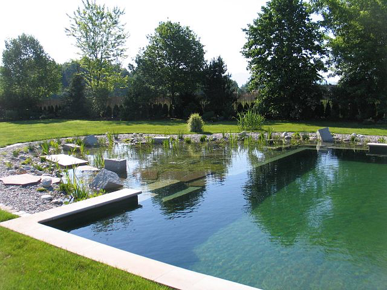

Empreendimento turístico
Table of Contents
- 1. DONE Introdução
- 2. IN-PROGRESS A Ideia e a Equipa
- 3. IN-PROGRESS Definição do Ambito
- 4. TODO Enquadramento Legal
- 5. TODO Quantificação de Custos
- 6. TODO Calendarização
- 7. TODO Estudos de Viabilidade
- 8. TODO Avaliação Financeira
- 9. TODO Organograma de Gestão do Empreendimento
- 10. TODO Conclusão
1 DONE Introdução
Este website foi criado devido à necessidade de existência de um espaço virtual, em que fosse possível a partilha de dados e informação referentes à criação de um Empreendimento. Este trabalho está inserido no curso de licenciatura de Engenharia Civil e consiste na criação, desenvolvimento e controlo das diversas fases de um Empreendimento, na óptica de um engenheiro civil.
Importa desde já referir, que o texto deste website é feito na condição de Promotor, em que são desenvolvidos inicialmente os primeiros passos do Empreendimento, indo depois progredindo, com a análise financeira, qualitativa e temporal.
Será então, e de uma forma sumária, introduzido a visão geral do Empreendimento, os objetivos que se pretende com o mesmo, a perspetiva financeira inicial quanto aos resultados e a conjuntura que leva às escolhas e objetivos pretendidos.
Sendo este website de livre acesso ao público em geral, é importante referir que a informação que aqui consta, é para um projeto fictício, e que portanto não deverá ser usado como fonte de informação ou de apoio a nenhum trabalho, seja ele académico ou não.
Este website encontra-se em atualização.
2 IN-PROGRESS A Ideia e a Equipa
Elaboração provisória dos objetivos do Empreendimento, assim como alguns dos grupos participantes no processo de criação e estudo da viabilidade económica-financeira, ambiental e quais quer outros estudos que se venham a mostrar necessários no desenvolvimento do Empreendimento.
Nesta página ,encontra-se o resumo de todas as fases de um projeto, de acordo com os apontamentos do Professor António Duarte.
2.1 O Empreendimento
O empreendimento consiste na instalação e exploração de uma aldeia hoteleira e turística, no concelho de Porto de Mós, em plena Serra de Aire e Candeeiros, perto do percurso pedestre da Fórnea.
A aldeia será composta por um conjunto independente de casas, que têm como característica comum o fato de serem fabricadas a partir de contentores industriais usados. Uma ideia do tipo de casa pode ser vista na Figura 1 . 1

Figure 1: Exemplo de uma das casas a serem construídas
2.1.1 Georreferenciação do projeto:
A localização georreferenciada do projeto, pode ser vista aqui (abre
uma nova janela).
No topo esquerdo da nova janela, tem um botão
com "show code".
O Pressionar desse betão faz com seja apresentado o
código em python usado na elaboração da Georreferenciação, com os
valores das latitudes e longitudes para o projeto.
A figura 2, é o mapa da localização do projeto, estando este localizado a poucos kms a Sul de Porto de Mós, no Distrito de Leiria.

Figure 2: Mapa regional com a localização do projeto
Este mapa e outros mais, também pode ser visto aqui, caso exista algum problema com a
conversão de python para html no link acima referenciado na
"Note".
2.1.1.1 Limites da Propriedade
Georreferenciação de pontos ao longo do limite da propriedade
| Ponto | Latitude | Longitude |
|---|---|---|
| A | 39.5667 | -8.7973 |
| B | 39.5671 | -8.7962 |
| C | 39.5662 | -8.7942 |
| D | 39.5646 | -8.7929 |
| E | 39.5640 | -8.7944 |
2.1.2 Qualidade:
A imagem será um dos pontos mais importantes do empreendimento, com especial valorização ao modo como o projeto se vai integrar tanto na comunidade local, como no habitat natural da zona. Torna-se assim vital que os níveis de qualidade sejam estabelecidos no Projeto de Investimento, servindo de base à restante documentação:
- Obtenção da certificação LEED . O nível de certificação a atingir no projeto será decido em altura de Pré-Designe, com a colaboração dos restantes membros do Empreendimento.
- Toda a construção deve estar perfeitamente enquadrada com o habitat natural da zona.
- Todo o impacto ao habitat natural, deve ser mantido ao mínimo, tanto durante construção como durante a exploração.
- O projeto terá um total de 10 unidades em uma primeira fase, acrescida de outras 10, em uma segunda fase. No centro das unidades, estará a estação de serviço, que albergará os escritórios, recepção e serviços de manutenção.
- A informação quanto ao desenvolvimento do projecto será centralizada, sendo acessível aos vários membros da equipa. Pretende-se assim implementar o BIM na gestão do projecto. O uso das siglas B.I.M. ao longo deste documento e em futuros, representa um sistema de partilha de informação e não o de uso de algum software em especial.
2.1.3 Tempo:
São diversas as fases do Empreendimento, sendo mais tarde desenvolvido, com a colaboração de toda a equipa, uma análise mais aprofundada. A tabela 1,2 apresenta a duração prevista para as várias fases do projeto. O estudo temporal, assim como o desenvolvimento do gráfico de Gantt, é feito no Capítulo 6,
| Fase | Duração |
|---|---|
| Formação da Equipa | 4 meses |
| Processo de análise e desenvolvimento do projeto | 12 meses |
| Construção | 18 meses |
| Atividades de inicio de exploração | 2 meses |
| Adicionar 10 unidades à aldeia | final de 3 anos |
| Tempo de vida do projeto | 50 anos |
2.1.4 Custo:
Devido ao tipo de características do Empreendimento, o público alvo é bem especifico, sendo de esperar que seja uma clientela jovem, com gosto pela natureza, e por turistas, que quer visitando a Serra de Aire ou Fátima, estando esta última a 30kms de distância, decidam pernoitar na aldeia. É de acordo com o gosto e necessidades destas pessoas que as várias unidades serão decoradas, algo que se espera não tenha um preço muito significativo.
O desenvolvimento da análise financeira é feita ao longo deste trabalho e mais concretamente no capítulo 8 .
| Descrição | Preço (euros) |
|---|---|
| Obtenção e preparação do terreno | 100000 |
| Obtenção de 10 contentores usados | 25000 |
| Preparação das 10 unidades (interior e exterior) | 100000 |
| Pagamento à equipa | 60000 |
| Construção da Estação central | 25000 |
| Licenças, impostos e taxas | 10000 |
| Diversos | 35000 |
| Total | 355000 |
A tabela 2 apresenta os custos esperados até ao inicio das atividades de exploração. A este valor, há que depois acrescentar as despensas de pessoal e manutenção, para manter em funcionamento as operações diárias na aldeia. O valor Total das despesas na fase inicial do Empreendimento, será repartido por aproximadamente dois anos, como estimado na tabela 1.
2.2 Gestor de Projeto
- Sendo este um projeto que pretende alcançar a certificação LEED, um dos requisitos mais desejados no Gestor, será o conhecimento e experiência com projetos sustentáveis. Ele próprio, ser certificado pelo USGBC ou mesmo pelo BREEAM é certamente uma mais valia para o projeto. 3
- A experiência é mais valorizada que o grau académico. O Gestor deve ter pelo menos 10 anos de experiência em equipas de liderança de Empreendimentos na construção civil.
- Capacidade de criação e liderança de uma equipa multidisciplinar. A equipa será formada o mais cedo possível.
- Sentir-se à vontade a lidar com sistemas informáticos de informação centralizados (BIM), de modo que toda a equipa possa facilmente compartilhar, alterar, rever e criar o Projeto em conjunto.
- De modo a que o Gestor se mantivesse à frente do projeto para além da fase de Construção, seria uma mais valia que ele tivesse conhecimentos de hotelaria e de supervisão das operações diárias no âmbito de coordenação das equipas, contato com fornecedores, incluíndo supervisão e controlo dos pagamentos a estes, etc.
- A nível da personalidade, deverá ser uma pessoa dinâmica e carismática, com facilidade de coordenação das equipas, e de resolução de qualquer conflito que possa surgir.
- Para além dos conhecimentos informáticos, de modo a fazer a supervisão da parte digital da integração BIM no projeto, o Gestor de Projetos deve também ter outros conhecimentos informáticos, de modo a poder fazer a supervisão do website do Empreendimento, e para contato social (Facebook, Twitter, Google+, etc) com os clientes.
2.3 Consultores
Os consultores deverão integrar a Equipa de Projeto, desde o início, e manterem-se ao longo das diversas fases. Após o início das operações na Aldeia, uma nova equipa deve ser formada, de acordo com as necessidades das operações.
- Engenheiro do ambiente, de modo a aconselhar na integração do projeto no habitat local. O engenheiro do ambiente deverá coordenar o seu trabalho com o arquiteto, de modo a conseguir um enquadramento do projeto na paisagem local, evitando ao máximo alterar as condições naturais existentes.
- Arquiteto com experiência em construção sustentável em será preferível que tenha tido contato com construções que tenham obtido a certificação LEED.
- Decorador de interior com experiência em construção moderna, que ficará encarregue da decoração dos ambientes interiores das casas e das instalações principais. Deverá coordenar o trabalho interior com o Arquiteto e com o Engenheiro do Ambiente.
- Advogado, com experiência a lidar com projetos de construção.
2.4 Contratação
O modelo de contratação a utilizar no projeto é o método tradicional, em que após a seleção da equipa de consultores com responsabilidades específicas de criação do projeto, é depois selecionado um empreiteiro após um concurso. Os interesses do Promotor, são defendidos durante a duração do projeto, pelo Gestor de Projeto, que se encontra a trabalhar diretamente para o promotor, recebendo um salário mensal pelos seus serviços.
3 IN-PROGRESS Definição do Ambito

Figure 3: Exemplo de uma das casas a serem construídas. Imagem obtida do website: http://housely.com/evolution-shipping-container-homes/
Serão agora abordadas as características do Empreendimento, assim como os objetivos pretendidos, inclusivo os métodos de controlo que se pretendem vir a utilizar ao longo da vida do Empreendimento. Ao longo desta secção do documento serão analisados:
- Caraterísticas do empreendimento
- Identificação do enquadramento legal.
- Modelo de funcionamento do empreendimento
- Planeamento temporal (calendarização)
- Métodos de construção, soluções técnicas. Consideração de alternativas.
- Quantificação de custos (estimativa)
- Planeamento financiamento
No entanto, a abordagem de algumas das características acima referidas, não está limitada só a esta secção do documento, pois pela sua própria natureza, como pelo próprio método de desenvolvimento deste documento, requerem que sejam abordadas à luz de diferentes situações e de acordo com a quantidade de informação disponível no momento.
3.1 Caraterísticas e Objetivos
A tendência do sector imobiliário a nível mundia é clara. Existe um forte interesse do público pelo meio ambiente, que certamente deverá aumentar, à medida que os efeitos das alterações climáticas são sentidas e intensificadas. O número de empresas e pessoas dedicadas à construção verde, tem vindo a aumentar mundialmente. E este aumento só existe por causa do atrás referido interesse do público.
Desta tendência mundial para a utilização de produtos verdes, que incluindo na lista estão as próprias edificações, surge a ideia da criação de um complexo de casas verdes, em plena Serra de Aire. O complexo fica localizado em plena zona rural, perto da estrada nacional que vai de Porto-de-Mós para Alvados. O caminho desde a estrada nacional até ao local do complexo, é feito em caminho de terra batida e pedras, que no entanto, e mesmo em época de chuvas, e devido à grande quantidade de pedra de grandes dimensões, não oferece problemas de acesso rodoviário a carros ligeiros.4
No entanto é de prever que algumas reparações tenham que ser feitas anualmente.
3.2 Público Alvo
O público alvo são as pessoas que tentam levar uma vida sustentável e que pela natureza do Empreendimento, e a forma como ele está inserido em uma zona natural, sintam um apelo especial por este tipo de projetos.
No entanto, devido à solitude proporcionado pelo local, e à beleza da paisagem, o Empreendimento também poderá a vir a servir casais à procura de romantismo. Nesse mesmo segmento do público, também é possível proporcionar nos campos do complexo, espaço para casamentos. No entanto, este último será a evitar, por causa do barulho que normalmente é causado por este tipo de festas, que viria a pôr em causa a filosofia do projeto, que pretende acima de tudo ser um espaço de harmonia e respeito para com a natureza e para com a vizinhança.
Pessoas que gostam de fazer caminhadas ou btt na serra, também facilmente encontram no complexo, um espaço que associa-se ao seu estilo de vida, aonde poderão descansar e pernoitar, após um dia de exercício.
Quando se analiza a população alvo pela faixa etária, o grupo de possíveis clientes deverá estar entre os 20 e os 65 anos. Esta afirmação baseia-se nas exigências físicas que normalmente estão associadas à vida campestre e às atividades ao ar livre.
Quanto ao sexo, ambos os sexos devem utilizar de igual modo as nossas instalações, no entanto, o sexo masculino poderá ter uma maior incidência, devido a ser ele o que mais pratica exercício na serra. No intanto, esta diferença vem-se a reduzir, visto existir um número crescente de indivíduos do sexo feminino, a praticarem atividades no exterior.
Em uma análise do poder de compra dos nossos clientes, ela aponta para elementos da classe média baixa e classe média. Embora a classe média alta e rica também possa vir a utilizar os nossos serviços, por uma questão de moda.
3.3 Modelo de Funcionamento
O complexo encontra-se dividido em 11 lotes, em que um dos lotes, que apresenta uma área ligeiramente superior aos outros, vai ser usado para a construção do edificio central que albergará o escritório, recepção, oficina de manutenção e bar. Também neste lote será criada uma área exterior comum para os residentes e visitantes do complexo, com parque de merendas e piscina biológica. Os restantes lotes serão usados para a construção de casas.
3.3.1 Edificio Central

Figure 4: Imagem do tipo de interior pretendido no Edifício Central. fonte: http://organics.org/
Situado no maior dos 11 lotes, estratégicamente localizada no centro do complexo, o Edificio Central é o núcleo de toda a atividade. Dele fazem parte:
3.3.1.1 Escritório
Centro administrativo do complexo, será usado pelo Gestor de Projeto 5 em fase de Exploração. Em ele serão arquivados os documentos legais e não legais, necessários ao dia-a-dia do complexo. O escritório também servirá de espaço para reuniões administrativas.
3.3.1.2 Recepção
3.3.1.3 Bar
3.3.1.4 Piscina Biológica

Figure 5: Exemplo de uma piscina biológica, em que o elemento "água", mistura-se com o elemento "terra". fonte de imagem: https://en.wikipedia.org/wiki/Natural_pool
A piscina biológica "é um lago de banho artificial, impermeabilizado com uma tela plástica e composto por uma zona destinada ao banho e outra à depuração de água por processos biológicos e mecânicos. Ou seja, pode servir para natação ou fins ornamentais e de lazer, mantendo sempre um aspecto visual natural – a depuração da água é executada, também, graças às espécies aquáticas nela instaladas." fonte: GreenSavers
A piscina é um local que se pretende de convívio para toda a família, em que no Verão instalaremos um pequeno bar, aonde os nossos hóspedes poderão obter bebidas refrescantes.
"Os custos variam muito, dependente do tamanho da instalação e dos materiais escolhidos. Estruturas em betão são mais caros do que a impermeabilização com uma tela plástica especial – afinal o método mais comum para a construção de piscinas biológicas.
Com a base em cerca de 150 projectos realizados de piscinas biológicas em Portugal pode-se considerar um preço de orientação por metro quadrado construído varia entre 120 e 125 Euro (excluindo apenas o valor da água do primeiro enchimento)."
fonte: Biopiscinas
3.3.1.5 Parque de Merendas
3.3.1.6 Oficina
3.3.1.7 Canil
É esperado que muito dos nossos clientes sejam donos de animais de estimação. Para que eles possam disfrutar de uma estadia descansada e sem preocupações, taremos ao dispor dos nossos clientes um canil, que pelo qual, será cobrado uma taxa extra de 5 euros ao dia. Este valor incluí o fornecimento de ração sólida aos animais. Não é permitido qualquer outro tipo de ração dentro do canil, de modo a assegurar as condições de higiene e saúde dos animais. Na altura em que o animal de estimação é deixado ao nosso cuidado, o dono deverá assinar um documento preparado pelo nosso advogado, em que nos libera de todas as responsabilidades caso o animal venha a contrair alguma doença por estar em contato com outros animais no canil.